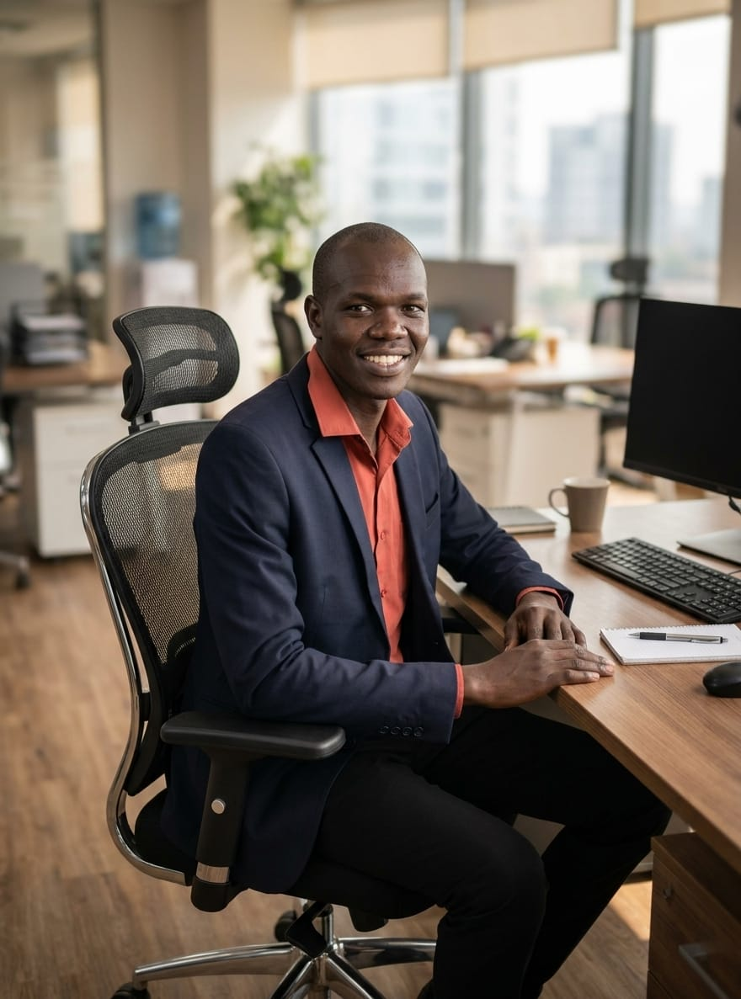
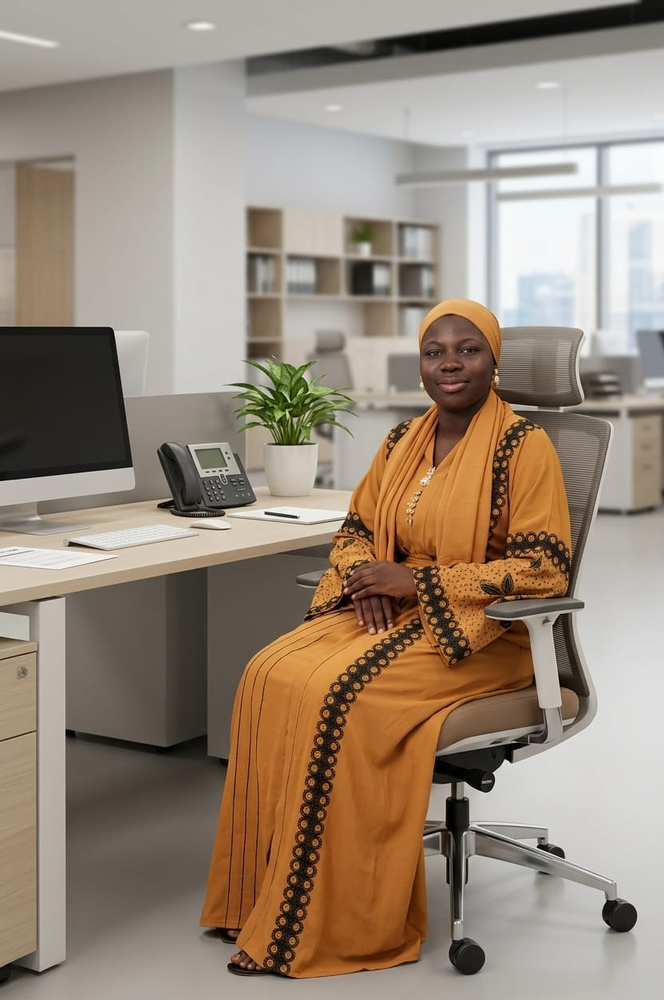
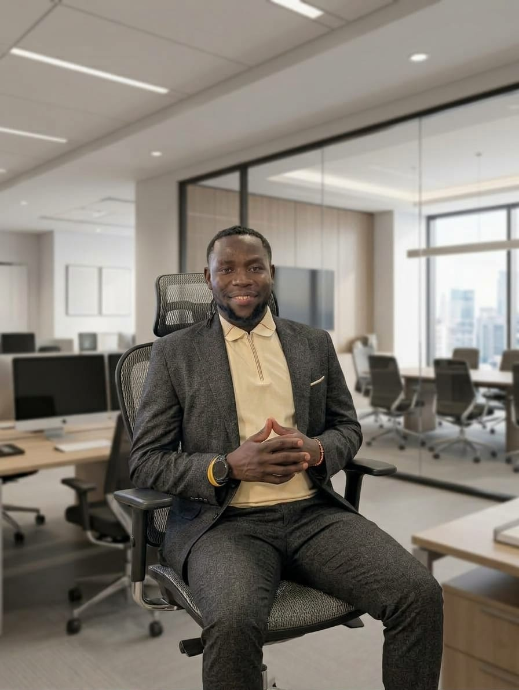

Contact Us
Get in touch
Questions about a trip or ready to plan your next adventure? Our team is happy to help.
Riverstone Rapids
Murchison Falls National Park
Nwoya
District, Uganda
WhatsApp: 0708 323 443
Phone: 0772 555 019
Email: hello@riverstonerapids.ug
Meet the team


